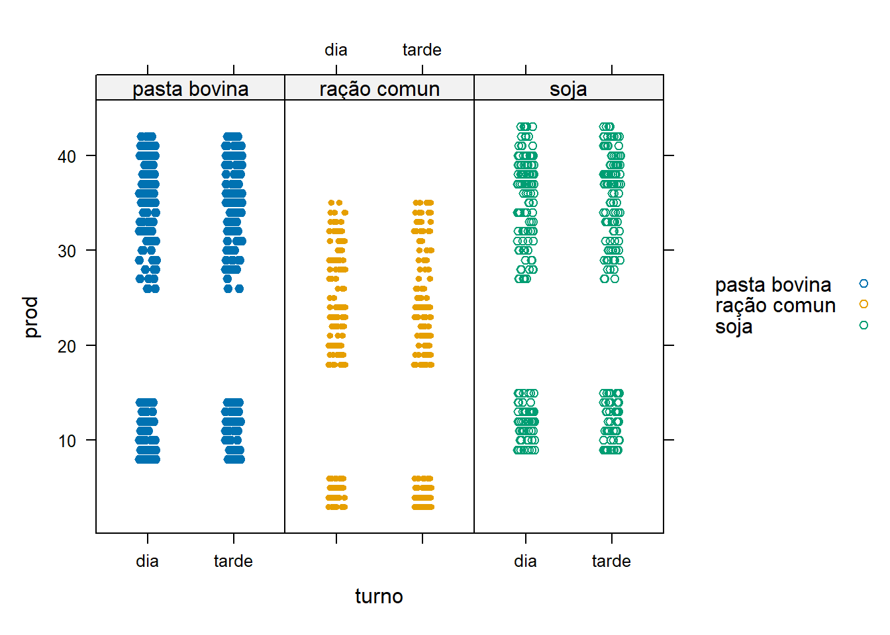
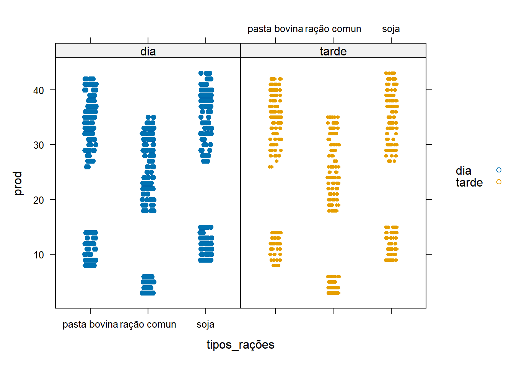
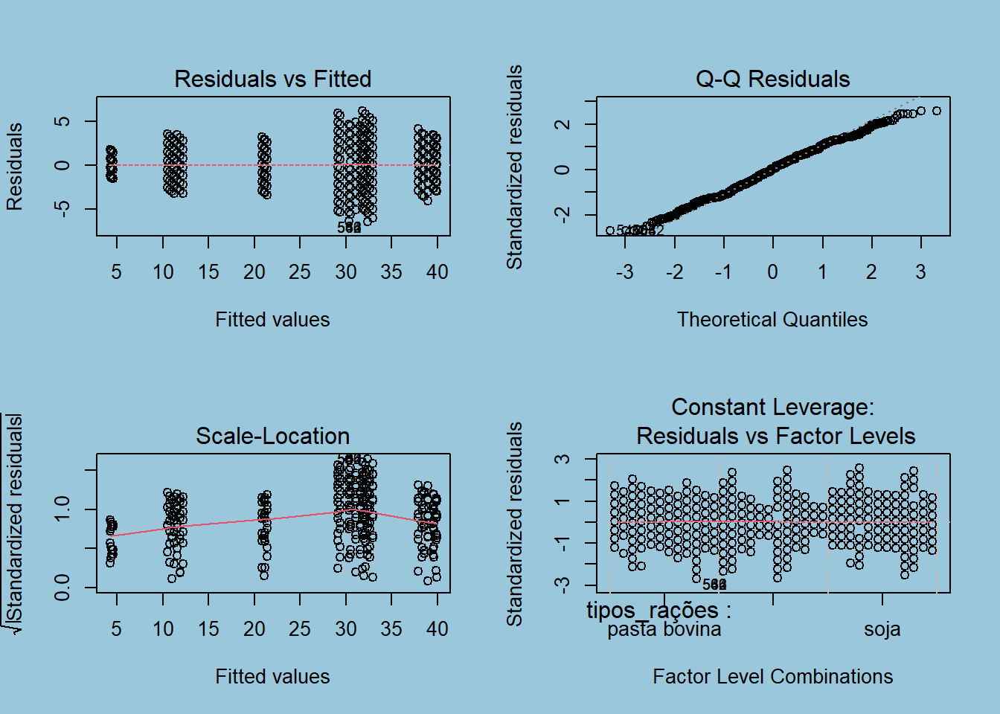
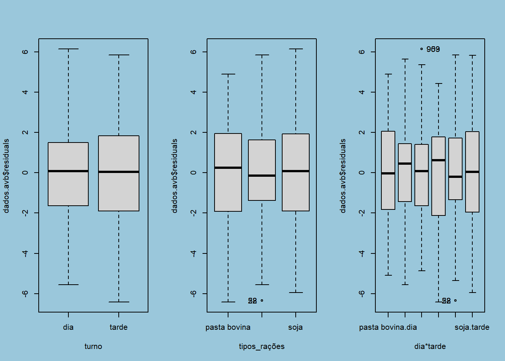

Análise da produção de Leite em um Fazenda Utilizando DBC
Joseferson Barreto
Graduado em Estatística
Universidade Estadual da Paraíba
Dr. Tiago Almeida
Universidade Estadual da Paraíba
Sumário
Resumo
Introdução
Metodologia
Conclusões
Referências
Resumo
O objetivo do presente trabalho foi desenvolver uma metodologia adequada para análise de um experimentos em parcelas subdivididas quando os tratamentos primários estão dispostos em uma estrutura de delineamento em blocos completos parcialmente balanceados. Usando o método dos mínimos quadrados foram determinadas as expressões para as várias somas de quadrados que compõem a análise de variância e a composição do teste F.
Introdução
No experimento em parcelas subdivididas, as parcelas experimentais são divididas em sub parcelas. São estudados dois ou mais fatores simultaneamente, tais fatores são chamados primários, secundários e assim por diante.
Os fatores primários são aleatorizados nas parcelas, os secundários nas sub parcelas. O modelo linear para o experimento em parcelas subdivididas no delineamento em blocos ao acaso
é dado por:
\(yijk = µ + τi + βj + eij + θk + γik + Ɛikj\)
onde:
- µ é a média geral;
- τi é o efeito do i-ésimo tratamento sobre a variável resposta;
- βj é o efeito do j-ésimo bloco sobre a variável resposta;
- eik é o resíduo aleatório à nível de parcelas;
- θk é o efeito do k-ésimo sub-tratamento sobre a variável resposta;
- γik é o efeito da interação do i-ésimo tratamento com o j-ésimo subtratamento sobre a variável resposta;
- Ɛijk é o resíduo aleatório associado a observação yijk à nível de sub-parcelas.
Neste trabalho será analisado um banco de dados fictício de um experimento em blocos casualizados, onde há 3 tipos de ração bovina (racao_comun, pasta_bovin e soja_bovina), 2 horários diferentes
(manhã e tarde ) com 3 repetições em blocos casualizados.
Objetivo:
Comparar se há diferença significativa na produção leite dependendo do tipo de alimentação fornecido as vacas e o horário do dia
Metodologia
Para esta análise será utilizado o pacote ExpDes.pt para obter a ANOVA e demais resultados, além do software Rstudio.
Visualização dos 10 primeiros dados do Banco de Dados
[1] "C:/Users/joseferson/Documents/joseferson barreto/UFLA_Apresentation"| racao_Comun | Turno | mes | pasta_bovin | soja | rep |
|---|---|---|---|---|---|
| 26 | dia | primeiro mês | 41 | 41 | 1 |
| 26 | tarde | primeiro mês | 41 | 41 | 1 |
| 33 | dia | primeiro mês | 37 | 39 | 1 |
| 25 | tarde | primeiro mês | 40 | 37 | 1 |
| 29 | dia | primeiro mês | 37 | 39 | 1 |
| 34 | tarde | primeiro mês | 36 | 40 | 1 |
| 28 | dia | primeiro mês | 36 | 38 | 1 |
| 27 | tarde | primeiro mês | 40 | 41 | 1 |
| 29 | dia | primeiro mês | 37 | 37 | 1 |
| 32 | tarde | primeiro mês | 39 | 43 | 1 |
Análise Descritiva
Visualização do Experimento
Aqui vemos o turno dado tipo de rações

Aqui vemos os Rações dado o turno

Teste de Hipóteses
Hipóteses que queremos testar:
\(H_0\): Não há diferença entre os Turnos(horários de coleta do leite das vacas) em relação a produtividade.
\(H_1\): Há influência dos horários da coleta de leite na produtividade.
\(H_0\):Não há diferença entre os blocos.
\(H_1\): Há diferença entre os blocos.
\(H_0\): Não há diferença entre os tipos de rações na produtividade.
\(H_1\): Há diferença dos tipos de rações na produção.
\(H_0\): A interação entre os tipos de rações e os horários de coleta do leite(turno) não é significativa.
\(H_1\): A interação entre os tipos de rações e os horários de coleta do leite(turno) é significativa.
Criando o nosso modelo
Para criar o nosso modelo vamos utlizar a função aov() do pacote Stats, em sequência , utilizaremos o comando Summary para montagem do quadro da váriancia , popurlamente conhecido como quadro da Anova .
hipóteses da Anova
\(H_0 :\) Não existe diferença entre os tratamentos para \(P \ge 0,05\)
\(H_1 :\) ao menos um dos tratamentos diferem entre si \(P < 0,05\)
library(DT)
library(gt)
attach(banco)
dados1.av = aov(prod ~ tipos_rações*turno + Error(blocos:tipos_rações), data = banco)
summary(dados1.av)
Error: blocos:tipos_rações
Df Sum Sq Mean Sq F value Pr(>F)
tipos_rações 2 19952 9976 1.069 0.368
Residuals 15 140022 9335
Error: Within
Df Sum Sq Mean Sq F value Pr(>F)
turno 1 10 9.823 1.706 0.192
tipos_rações:turno 2 23 11.484 1.995 0.137
Residuals 1059 6097 5.757 Aqui podemos ver o nosso primeiro modelo, é do tipo onde temos nossa variável resposta(oridução) sobre a interação dos tratamentos mais o erro de efeito de blocos associado ao tratamento primário
como podemos analisar o Pvalor que é resultado da comparação do valor F encontrado com os dados do experimento com o Ftabelado , ou seja , o R pega o valor encontrado de F e compara com o valor do Fpadrão(Ftabelado) considerando o nível de significancia de 5% e como podemos observar ,nosso Pvalor é maior que 0,05% ,logo, não há diferenças nos tratamentos há 95% de confiança.
Análise de Resíduos
dados.avb = aov(prod ~ tipos_rações*turno + blocos*tipos_rações-blocos,data =banco)
summary(dados.avb) Df Sum Sq Mean Sq F value Pr(>F)
tipos_rações 2 19952 9976 1732.751 <2e-16 ***
turno 1 10 10 1.706 0.192
tipos_rações:turno 2 23 11 1.995 0.137
tipos_rações:blocos 15 140022 9335 1621.343 <2e-16 ***
Residuals 1059 6097 6
---
Signif. codes: 0 '***' 0.001 '**' 0.01 '*' 0.05 '.' 0.1 ' ' 1Podemos Observar Que o fator Turno deu significativo logo pelo menos um dos tipos de ração diferentes entre si.
par(bg = '#9ac7db')
par(mfrow=c(2,2))
plot(dados.avb)
Os resíduos pelo os valores previstos , ele nos permite observar tanto a linearidade quanto a homocedasticidade , mas como verificamos se de fato o modelo é linear ? nos conseguimos a resposta olhando a linha vermelha traçada nesse primeiro gráfico(Residuals Vs Fited) , caso a linha vermelha esteja aparentimente horizontal então temos a linearidade , logo , em osso caso esse presuposto foi atendido. Outro ponto a se observar nesse gráfico é a homocedasticidade que nada mais é que a homogenidade das variâncias , caso exista homogenacidade nos dados veremos a dispersão dos pontos de forma aproximadamente constante ao longo dos valores previstos de Y(que está no eixo X),ou seja , teriamos uma dispersão aproximadamente regular em forma de retângulo ao longo do gráfico ,perceba que esse é o nosso caso.Caso não exitesse homogenidade nos dados os valores formariam uma espécie de triângulo no gráfico.
normal QQ= é o gráfico que nos permite ver sé os resíduos seguem distribuição normal , onde no eixo Y estão os resíduois padronizados e no eixo X os resíduos teóricos que seriam os resíduos esperados caso a distribuição fosse normal , para que os nosssos dados siga uma distruição normal , os valores devem estar em cima da linha pontilhada , embora nem todos estejam em cima da linha , podemos considerar que está apróximadamente normal, caso não fosse atendido , estes pontos aprensentaria um formato de curva .
Scale_Location = é o gráfico mais recomendado para ver a homogenacidade , caso exista homogenacidade a linha vermelha deve estar aproximadamente horizontal , que é nosso casso
Residuals vs factor levals=Pode ser útil para detectar a presença de pontos influenciantes. No nosso caso, não temos presença de infuenciadores, umas vez que a linha vermelha, a qual indica essa presença, tem como valor de resíduo igual a zero.
Teste de normalidade dos residuos ( Shapiro-Wilk )
Vamos começar analisando o resultado do teste de normalidade de resíduos(Shapiro-Wilk)
hipóteses:
\(H_0 :\) existe normalidade nos resíduos para \(P \ge 0,05\)
\(H_1 :\) não existe normalidade dos resíduos \(P < 0,05\)
shapiro.test(dados.avb$residuals)
Shapiro-Wilk normality test
data: dados.avb$residuals
W = 0.99325, p-value = 8.042e-05Como o \(P_{valor}< 0,05\) , rejeita-se a hipótese nula . Nesse sentido , temos que não existe normalidade nos resíduos.
[1] "28" "52"
[1] "903" "959" "28" "52" Aqui temos a comparação das médias, perceba que quando olhamos os fatores individualmente os dados não apresentam valores extremos(outliers), isso muda quando passamos analisar a interação entre eles(ultimo gráfico).
Analisando o resultado do teste de homogenidade(bartlett)
hipóteses:
\(H_0 :\) existe homogenidade na variância para \(P \ge 0,05\)
\(H_1 :\) não existe homogenidade na variância \(P < 0,05\)
bartlett.test(dados.avb$residuals, turno)
Bartlett test of homogeneity of variances
data: dados.avb$residuals and turno
Bartlett's K-squared = 2.4857, df = 1, p-value = 0.1149bartlett.test(dados.avb$residuals, tipos_rações)
Bartlett test of homogeneity of variances
data: dados.avb$residuals and tipos_rações
Bartlett's K-squared = 2.6108, df = 2, p-value = 0.2711De acordo com o teste de bartlett a 5% de significância, não rejeita-se a hipótese nula, logo, as variâncias podem ser consideradas homogêneas.
Análise utilizando o pacote ExpDes.pt
Para realiza o dbC(O delineamento em blocos casualizado ) vamos utilizar a função psub2.dbc da biblioteca ExpDes.pt onde tipos_rações é os tipos de rações , e turno é os os turnos do dia em que ocorreram coleta do leite,blocos são as repetições do experimento ,prod são os valores observados mcomp= com o argumento “Tukey” para observar qual a fator teve um melhor desempenho na produção do leite psub2.dbc considera o nível de significancia de 0,05% para a execução do teste .
require(ExpDes.pt)
psub2.dbc(tipos_rações, turno, blocos, prod, quali = c(TRUE, TRUE),mcomp = "tukey",
fac.names = c("rações", "turno"), sigF = 0.05)------------------------------------------------------------------------
Legenda:
FATOR 1 (parcela): rações
FATOR 2 (subparcela): turno
------------------------------------------------------------------------
------------------------------------------------------------------------
Quadro da analise de variancia
------------------------------------------------------------------------
GL SQ QM Fc Pr(>Fc)
rações 2 19952 9976.2 133.38 <2e-16 ***
Bloco 5 139274 27854.7 372.41 <2e-16 ***
Erro a 10 748 74.8
turno 1 10 9.8 1.71 0.1918
rações*turno 2 23 11.5 1.99 0.1366
Erro b 1059 6097 5.8
Total 1079 166104
---
Signif. codes: 0 '***' 0.001 '**' 0.01 '*' 0.05 '.' 0.1 ' ' 1
------------------------------------------------------------------------
CV 1 = 35.29839 %
CV 2 = 9.793368 %
Interacao nao significativa: analisando os efeitos simples
------------------------------------------------------------------------
rações
Teste de Tukey
------------------------------------------------------------------------
Grupos Tratamentos Medias
a soja 28.02778
a pasta bovina 27.025
b ração comun 18.45
------------------------------------------------------------------------
turno
De acordo com o teste F, as medias desse fator sao estatisticamente iguais.
------------------------------------------------------------------------
Niveis Medias
1 dia 24.40556
2 tarde 24.59630
------------------------------------------------------------------------Comparação de media para turno
library(DT)
library(readxl)
media_t<-read_excel("media_turno.xlsx")
media_t %>%datatable()segundo o teste F as medias dos niveis do fator Turno foram iguais,como não temos diferença significativa pelo teste f,logo ,as medias dos níveis do fator são estatisticamente iguais
Comparação de media para raçãoes
library(DT)
library(readxl)
media_R<-read_excel("media_rações.xlsx")
media_R %>%datatable()podemos perceber que temos diferenças nos níveis do fator tipo de rações pelo teste F, logo , pelo o teste de tukey(comparação de médias) temos que soja e pasta bovina apresentaram os melhores resultados
Conclusão
Pela análise de Variâncias as interações entre os fatores não foram significativas , assim como o fator turno(horário da coleta do leite ) também não foi significativo na produção,apenas o fator ração foi de fato significativo na produção, tendo a pasta bovina e a soja o mesmo efeito na produção do leite .
Referências
Depto. de Ciências Exatas-UFLA, C.P. 37, CEP: 37200-000 - Lavras, MG. São Paulo - Escola Superior de Agricultura “Luiz de Queiroz”. EXPERIMENTOS EM PARCELAS SUBDIVIDIDAS COM TRATAMENTOS PRIMÁRIOS EM BLOCOS INCOMPLETOS PARCIALMENTE BALANCEADOS: II. ANÁLISE INTRABLOCOS . A.R. de MORAIS2; M.C.S. NOGUEIRA3, Jan 1996, DISPONÍVEL EM: https://www.scielo.br/j/sa/a/LBrHXVfgRfhnH9SDxM9XpsJ/?lang=pt
Acesse meus outros projetos :
Relatório sobre os testes paramétricos e não paramétricos :